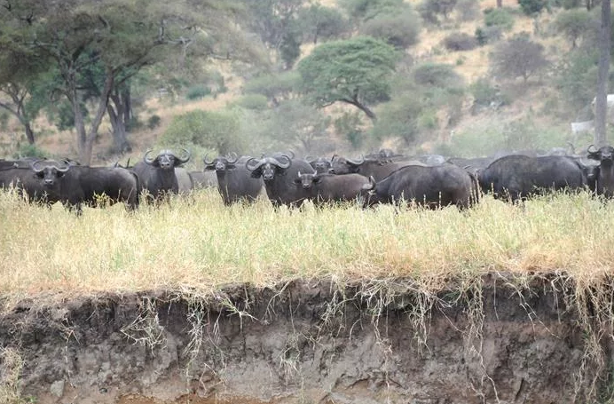

Parque Nacional del Serengeti (Tanzania)
Serengeti es un Parque Nacional situado en Tanzania que comprende un amplio territorio de más de 13.000 kilómetros cuadrados. Es un lugar espectacular a causa sobre todo de su excepcional fauna, siendo el parque que alberga la mayor población de leones de toda África. También es famoso por la migración anual de más de un millón de ñus.
Es hogar de grandes mamíferos: leones, leopardos, elefantes, rinocerontes y búfalos cafres; y también de muchas otras especies como hienas, gacelas, guepardos, cebras, avestruces, jirafas y gran variedad de aves rapaces, además de los cocodrilos e hipopótamos que residen en sus arroyos. La composición del suelo, abundante en rocas volcánicas impide el crecimiento de vegetación alta por lo que este entorno abierto es ideal para el avistamiento de animales.
